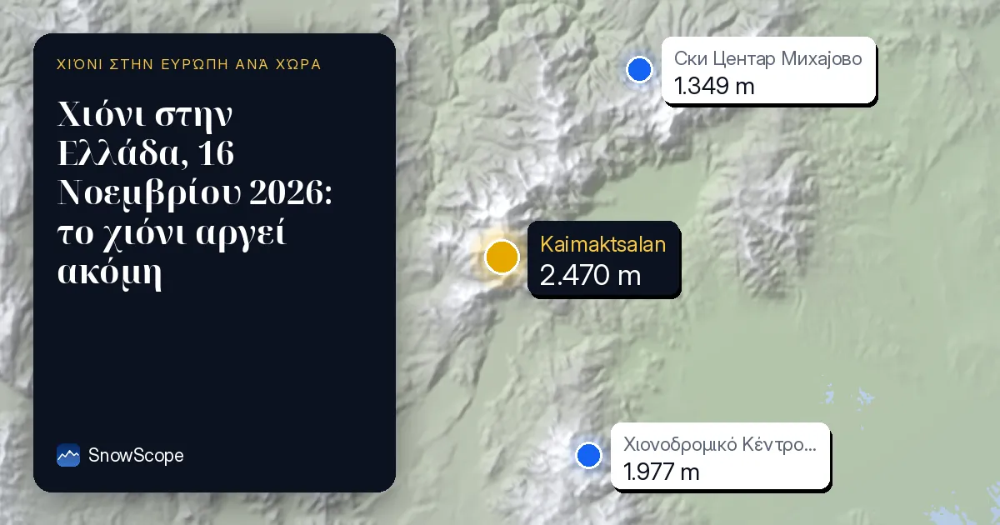

Χιόνι στην Ελλάδα, 16 Νοεμβρίου 2026: το χιόνι αργεί ακόμη
Τα ελληνικά χιονοδρομικά κέντρα παραμένουν χωρίς χιόνι στις 16 Νοεμβρίου, με μόλις 10 τετραγωνικά χιλιόμετρα ασπρών διάσπαρτων επιφανειών σε ολόκληρη την χαρτογραφημένη περιοχή. Μια αλλαγή στο καιρό έρχεται το επόμενο Σαββατοκύριακο, αλλά το χιόνι της αρχής της περιόδου θα είναι λεπτό και μόνο σε μεγάλα υψόμετρα.
Δείτε την πρόγνωση χιονιού για Καϊμακτσαλάν στην εφαρμογή SnowScopeΎψος χιονιού, ειδοποιήσεις και τρισδιάστατος χάρτης, δωρεάν.
Πού είναι το χιόνι τώρα
Μόλις 10 km² από τα ελληνικά βουνά κρατούν χιόνι σήμερα. Το λίγο που απομένει κολλάει στις υψηλότερες κορυφές: το Όρος Ολύμπου και η κορυφογραμμή της Πίνδου συγκέντρωσαν 3 έως 6 εκατοστά τις τελευταίες τρεις ημέρες, αλλά αυτές οι νιφάδες έπεσαν σε γυμνό βράχο και αραιές επιφάνειες πάνω από 2.000 μέτρα. Κάτω από αυτό το ύψος, οι πλαγιές είναι εντελώς ξηρές.
Η χιονοκάλυψη συρρικνώνεται από την αρχή της εβδομάδας. Πριν μια εβδομάδα, 30 km² ήταν λευκά· χθες, 20 km² παρέμειναν. Αυτή η σταθερή απώλεια υποδεικνύει ήπιες νύχτες και καμία νέα πτώση για να αντικαταστήσει ό,τι λίγο φθινοπωρινό χιόνι είχε απομείνει.
| Χιονοδρομικό | Ύψος χιονιού | Φρέσκο χιόνι, 72 ώρες | Επόμενες μέρες | Κορυφή |
|---|---|---|---|---|
| Kaimaktsalan | 0 cm | 2 cm | 0 cm | 2.470 m |
| Χιονοδρομικό Κέντρο 3-5 Πηγάδια | 0 cm | 0 cm | 0 cm | 1.977 m |
| Εθνικό χιονοδρομικό κέντρο Βασιλ | 0 cm | 0 cm | 0 cm | 2.104 m |

Τι δείχνουν τα χιονοδρομικά κέντρα
Και τα 12 χιονοδρομικά κέντρα που παρακολουθούνται στην Ελλάδα αναφέρουν μηδενικό βάθος χιονιού στο ύψος λειτουργίας τους. Το Kaimaktsalan, το υψηλότερο σημείο στα 2.470 μέτρα, έχει συγκεντρώσει 2 εκατοστά τις τελευταίες 72 ώρες, αλλά αυτό είναι χιόνι βάσης, όχι χιόνι για σκι. Το Χιονοδρομικό Κέντρο 3-5 Πηγάδια και το Εθνικό χιονοδρομικό κέντρο Βασιλ είναι εξίσου άγονα.
Η αρχή Νοεμβρίου δεν έφερε χιόνι ούτε στα ανελκυστήρες μεσαίας κλίμακας. Η ζώνη 1.500 έως 2.000 μέτρων—όπου τα περισσότερα χειμερινά χιονοδρομικά κέντρα χτίζουν το έδαφος τους—κρατά σχεδόν καμία λευκή κάλυψη και μέσο βάθος μηδενικά εκατοστά. Ακόμα και στη σημία (2.000 έως 2.500 μέτρα), μόνο το 4 τοις εκατό της περιοχής είναι καλυμμένο με χιόνι.
Η αλλαγή έρχεται αργά αυτήν την εβδομάδα
Μια ψυχρή μάζα αέρα αναμένεται να φτάσει γύρω στο Σάββατο, 21 Νοεμβρίου. Προβλέπεται το πρώτο μετρήσιμο χιόνι εκείνη την ημέρα, με έως 1 εκατοστό να πέφτει στις υψηλότερες πλαγιές. Αυτό είναι λεπτό και δεν θα φτάσει στις βάσεις των χιονοδρομικών κέντρων.
Την επόμενη εβδομάδα (24 έως 30 Νοεμβρίου) έρχονται καλύτερες προοπτικές. Έως 4 εκατοστά προβλέπονται τη δεύτερη εβδομάδα του Νοεμβρίου, διασκορπισμένα σε αρκετές ημέρες. Αυτό θα ήταν πραγματικό χιόνι, αν και ακόμα όχι αρκετό για να ανοίξουν τα αθλητικά εδάφη και στα 12 κέντρα. Ο ρυθμός συσσώρευσης παραμένει αργός για ένα ελληνικό Νοέμβριο.
Ο άνεμος και το ύψος είναι τα σημαντικότερα
Όταν το χιόνι φτάσει στις 21 Νοεμβρίου, θα πέσει πρώτα στις κορυφές πάνω από 2.000 μέτρα και θα διαδοθεί σταδιακά κατάβασης εάν οι θερμοκρασίες παραμείνουν χαμηλές. Το Όρος Ολύμπου και η Πίνδος θα το δουν πρώτα. Τα χιονοδρομικά κέντρα χαμηλότερου υψομέτρου γύρω στα 1.500 μέτρα θα περιμένουν περισσότερο για χρησιμοποιήσιμο βάθος.
Οι ψυχρές νύχτες θα είναι κρίσιμες. Εάν ο αέρας ζεσταθεί ξανά κατά τη διάρκεια της ημέρας, οποιοδήποτε νέο χιόνι θα δεθεί αδύναμα στη υπάρχουσα λεπτή βάση, δημιουργώντας έναν κύκλο λάσπης και πάγου. Το χιόνι αρχής περιόδου είναι πάντα ασταθές σε γυμνό βράχο. Οι σκιέρ και οι ορειβάτες που ανεβαίνουν σε αυτά τα ύψη θα πρέπει να ελέγχουν προσεκτικά τις συνθήκες και να σεβόμαστε τα δελτία χιονοστιβάδων για εκτεθειμένες πλαγιές.
Τι να κάνετε τώρα
Εάν σχεδιάζετε ένα ταξίδι στην Ελλάδα τις επόμενες ημέρες, τα βουνά δεν είναι έτοιμα. Τα χιονοδρομικά κέντρα θα ανακοινώσουν πότε σχεδιάζουν να ανοίξουν· μην υποθέσετε ότι μπορούν να λειτουργήσουν μέχρι να το επιβεβαιώσουν. Χιόνι στο χάρτη δεν σημαίνει ότ χτενισμένες πίστες ή ανοικτά ανελκυστήρες.
Παρακολουθήστε την πρόγνωση από 21 Νοεμβρίου και μετά. Εάν η ψυχρή μάζα αέρα δώσει ό,τι αναμένεται, τα βουνά θα γίνουν αργά λευκά από πάνω προς τα κάτω. Ως τα τέλη Νοεμβρίου, πραγματικό σκι μπορεί να γίνει δυνατό—αλλά μόνο στα υψηλότερα χιονοδρομικά κέντρα, και μόνο σε χιόνι που θα είναι μια ή δύο εβδομάδες παλιό ως τότε.
Συμβουλές για σκιέρ
- Μην οδηγήσετε σε ένα χιονοδρομικό κέντρο χωρίς να ελέγξετε την ιστοσελίδα του ή να καλέσετε εκ των προτέρων. Χιόνι στο χάρτη του βουνού δεν σημαίνει ότι τα ανελκυστήρες τρέχουν.
- Εάν ανεβείτε ή κάνετε σκι πάνω από 2.000 μέτρα όταν φτάσει νέο χιόνι, παραμείνετε προσεκτικοί στον κίνδυνο χιονοστιβάδας. Λεπτό χιόνι σε ψυχρό βράχο είναι ασταθές. Ελέγξτε το επίσημο δελτίο χιονοστιβάδων πριν πάτε εκτός πίστας.
- Το χιόνι αρχής περιόδου συχνά λιώνει γρήγορα στον ήλιο. Οι νότιες πλαγιές θα γίνουν λάσπη μέχρι μεσημέρι· οι βόρειες όψεις θα παραμείνουν σταθερότερες περισσότερο.
- Μαζέψτε στρώματα. Η θερμοκρασία του αέρα στα 2.000 μέτρα θα είναι καλά κάτω από το σημείο πήξης όταν φτάσει το χιόνι, αλλά η γωνία του ήλιου στα τέλη Νοεμβρίου είναι ακόμα δυνατή στο μεσημέρι.
- Εάν σχεδιάζετε να επισκεφθείτε μετά τις 24 Νοεμβρίου, οι συνθήκες θα είναι πολύ καλύτερες, αλλά το βάθος θα είναι ακόμα μέτριο. Περιμένετε 10–20 εκ. στα υψηλά χιονοδρομικά κέντρα ως τα τέλη του μήνα εάν η πρόγνωση ισχύει.
About these numbers
Resort snow depths are the deepest snow on the resort's upper slopes on the date shown; they are estimates for an area, not a measurement at one point. Forecasts can change. Always read the official avalanche bulletin before going off-piste.
Cite this report
For research, teaching or the press: the numbers and charts are free to reuse under CC BY 4.0 with this citation.
SnowScope (2026), Χιόνι στην Ελλάδα, 16 Νοεμβρίου 2026: το χιόνι αργεί ακόμη, https://snowscope.app/blog/el/2026/11/greece-snow-report-16-november-2026.html, accessed 2026-11-16
SnowScope (Atlas Labs). (2026, November 16). Χιόνι στην Ελλάδα, 16 Νοεμβρίου 2026: το χιόνι αργεί ακόμη. SnowScope snow reports. https://snowscope.app/blog/el/2026/11/greece-snow-report-16-november-2026.html
BibTeX
@misc{snowscope2026greecesnowreport16novemb,
author = {{SnowScope (Atlas Labs)}},
title = {Χιόνι στην Ελλάδα, 16 Νοεμβρίου 2026: το χιόνι αργεί ακόμη},
year = {2026},
month = nov,
howpublished = {\url{https://snowscope.app/blog/el/2026/11/greece-snow-report-16-november-2026.html}},
note = {Published 2026-11-16 20:42 UTC; accessed 2026-11-16}
}· CC BY 4.0 · Methods, data and tools →
Kaimaktsalan: snow and temperature by height, this winter vs last (tools) →
Follow Καϊμακτσαλάν
Δωρεάν: μήνυμα όταν έρχεται φρέσκο χιόνι και η πρόγνωση κάθε πρωί.